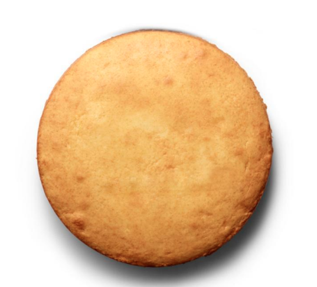

Basic Vanilla Cake Recipe

Ingredients:
- 2 sticks unsalted butter, at room temperature, plus more for the pans
- 3 cups all-purpose flour, plus more for the pans
- 1 tablespoon baking powder
- 1/2 teaspoon salt
- 1 1/4 cups sugar
- 4 large eggs,at room tempurature
- 1 tablespoon vanilla extract
- 1 1/4 cups whole milk (or 3/4 cup heavy cream mixed with 1/2 cup water)
Directions:
- preheat the oven to 350 degrees F. Butter two 9-inch-round cake pans and line the bottoms with parchment paper; butter the parchment and dust the pans with flour, tapping out the excess.
-
Whisk 3 cups flour, the baking powder and salt in a bowl until combined. Beat 2 sticks butter and the sugar in a large bowl with a mixer on medium-high speed until light and fluffy, about 3 minutes. Reduce the mixer speed to medium; beat in the eggs, one at a time, scraping down the bowl as needed. Beat in the vanilla. (The mixture may look separatedat this point.) Beat in the flour mixture in 3 batches, alternating with the milk, beginning and ending with flour, until just smooth.
-
Divide the batter between the prepared pans. Bake until the cakes are lightly golden on top and a tootpick inserted into the middle comes out clean, 30 to 35 minutes. Transfer to racks and let cool 10 minutes, then run a knife around the edge of the pans and turn the cake out onto the racks to cool completely. Remove the parchment. Trim the tops of teh cakes with a long serrated knife to make them level, if desired.